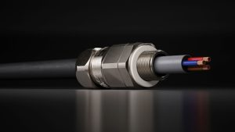
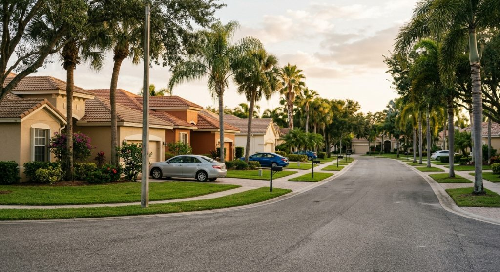
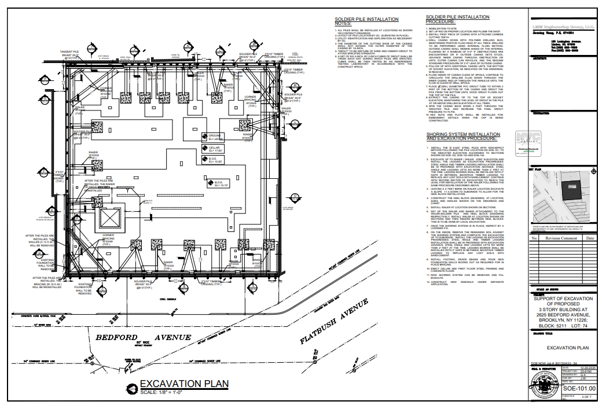

Sharma Tech — Construction / Engineering / Tech News
Edition No. 3 — Tuesday, November 17, 2026 (ET)
Daily edition for Sharma Electric & HVAC (Florida electrical + HVAC subcontractor). News window: Mon Nov 16, 5:00 AM ET – Tue Nov 17, 5:00 AM ET, widened to 72 hours only for items not in prior editions. Updates to earlier stories are labelled as updates. Prices are stated only where a source publishes one. Photos are pulled from the articles cited, and each PHOTO line names its source page.
At a Glance
- Florida: existing single-family home sales fell 10.1% year-over-year in October to 19,049, and new pending sales fell faster — down 15.7% — in Florida Realtors data released Mon Nov 16. The median single-family price still rose 2.2% to $420,000; condo/townhouse prices fell 3.3% to $290,000.
- Safety / equipment: Caterpillar announced Mon Nov 16 it will make collision warning and collision mitigation technologies standard on the majority of new Cat construction machines throughout 2027 — previously optional — with VisionLink close-call video and insights for fleet coaching.
- Update — Brooklyn collapse: engineers reviewing the city-approved support-of-excavation plans say the side next to the building that collapsed was the one place with no added bracing or underpinning required, even though a preconstruction report described that building's facade as in "poor condition with noticeable cracks." Cause is still not determined.
- Electrical spotlight product (new today): CMP Products Fortra cable glands — a next-generation cable gland range built for fast, simple installation with secure, inspectable terminations, launched Mon Nov 16, 2026.
- HVAC spotlight product (new today): Carrier Smart Thermostat featuring InteliSense technology (TSTATCCIEWF-01), co-developed with Universal Electronics — remote diagnostics, guided commissioning and up to 21 adaptive stages with Carrier's variable-speed heat pump — announced Mon Nov 9, 2026, the newest verifiable U.S. residential HVAC release not already featured.
- Thin-day note: no major U.S. construction-data release or OSHA action landed inside the 24-hour window; the confirmed list below is short on purpose.
Product Spotlight
A cool new electrical product and a cool new HVAC product every weekday — fresh picks Monday–Friday; weekends carry Friday's picks.
2.1 — ELECTRICAL SPOTLIGHT: CMP Products Fortra Cable Glands

Maker: CMP Products (part of the British Engines Group, headquartered in North East England, UK;… · Released: Mon Nov 16, 2026 — launch reported by Electrical Times on Nov 16, 2026; Fortra is available to order now.
Why it's cool: Cable glands are unglamorous until one fails an inspection or lets water into a panel. A gland range designed around fast installation and inspectable termination speaks directly to the two things that decide commercial and industrial electrical work: labour minutes per termination and whether an inspector (or the next tech) can verify…
Read the full story →2.2 — HVAC SPOTLIGHT: Carrier Smart Thermostat featuring InteliSense Technology (TSTATCCIEWF-01)
Maker: Carrier (Carrier Global Corporation), co-developed with Universal Electronics Inc. (UEI) · Released: Mon Nov 9, 2026 — joint announcement via Business Wire dated Nov 9, 2026. Labelled honestly: it is the newest verifiable U.S. residential HVAC…
Why it's cool: This is the service-model thermostat: diagnostics that reach the dealer before the truck rolls, guided commissioning that cuts install errors, and demand-response built in rather than bolted on. For Sharma's HVAC service and changeout work, a thermostat that reports system health with the homeowner's consent means better first-visit fix…
Read the full story →Section 1 — Top construction / engineering / tech stories

1.1 — FLORIDA: Home sales fall 10.1% in October; new contracts fall 15.7% — data released Mon Nov 16, 2026
What happened: Florida Realtors released its October 2026 housing data on Mon Nov 16, 2026. Closed sales of existing single-family homes statewide totalled 19,049, down 10.1% year-over-year — the third straight month of…
Why it matters to Sharma: Market signal for Sharma's service and HVAC changeout side: expect price-sensitive homeowners and slower resale-driven work in the near term, while new-construction rough-in volume is set by builder starts, not resale closings. No outreach on research alone.…
Read the full story →1.2 — Caterpillar makes collision warning and mitigation standard on most new construction machines in 2027 — Mon Nov 16, 2026
What happened: Caterpillar Inc. announced Mon Nov 16, 2026 (IRVING, Texas, via PR Newswire) that it is making collision warning and collision mitigation technologies standard on the majority of new Cat construction machines…
Why it matters to Sharma: Sharma crews work around excavators, loaders and lifts on builder sites every week. Expect newer rental and GC fleets to arrive with these systems through 2027; the practical takeaway is unchanged — ground workers stay visible, stay out of swing and reverse…
Read the full story →1.3 — UPDATE: After the Brooklyn collapse, engineers question the city-approved excavation plans — reporting Nov 15, 2026
What happened: Gothamist's review of building records (published Nov 15, 2026) found that the city-approved support-of-excavation plans for the lot next to 1321 Flatbush Ave did not require additional bracing to support the…
Why it matters to Sharma: Same transferable discipline as Editions 1–2, sharpened: on TUG and underground work next to existing structures, what the approved drawing omits matters as much as what it shows. If protection for the neighbouring structure is not on the plan, raise it…
Read the full story →1.4 — Daikin Applied introduces D60-W, a 60 MW cooling blueprint for NVIDIA AI factories — announced Nov 10; ACHR News listing Nov 16, 2026
What happened: Daikin Applied introduced Reference Architecture D60-W — Water-Cooled Chillers with Dry Coolers — on Tue Nov 10, 2026, and ACHR News listed the system in its new-products coverage on Mon Nov 16. D60-W is a cooling…
Why it matters to Sharma: No direct scope for Sharma today; the value is market awareness. Florida data-center and light-industrial growth runs on exactly this kind of cooling and power infrastructure, and the electrical loads behind a 60 MW cooling plant are the top end of the market…
Read the full story →1.5 — Schneider Electric and Arup partner on AI tools, microgrids and next-generation building electrical systems — Mon Nov 16, 2026
What happened: Voltimum reported Mon Nov 16, 2026 that Schneider Electric and Arup have formed a strategic energy-tech partnership to co-develop new energy systems for buildings, cities and infrastructure — focusing on AI-enabled…
Why it matters to Sharma: Directional for Sharma's commercial and smart-building conversations: ETAP is the kind of tool GC engineers use on larger jobs, and Asset Advisor-style predictive maintenance is the service model large owners increasingly expect. No purchase or action…
Read the full story →1.6 — FLORIDA brief: FDOT roadwork closures around St. Johns County for the week of Nov 16–20 — Mon Nov 16, 2026
What happened: The St. Augustine Record's FDOT summary (Nov 16, 2026) lists a week of lane and shoulder closures in St. Johns County: daytime and nighttime closures on County Road 16A west of Timberwolf Trail; daytime shoulder…
Why it matters to Sharma: Route-planning note only for any St. Johns County travel this week; the U.S. 1 work includes signal removal, a reminder of how much public electrical scope sits inside FDOT projects. Source: St. Augustine Record, Nov 16, 2026 —…
Read the full story →
Not confirmed — excluded from the confirmed items above
GE Vernova HYpact-145g SF6-free compact switchgear "launched Nov 17, 2026" — the manufacturer's announcement is dated Tue Nov 17, 2026 in Cologne, after this edition's 5:00 AM ET window closed, so it cannot be reported as…
Read this section in full →About the reporting window
Confirmed in-window (Nov 16, 5:00 AM – Nov 17, 5:00 AM ET) items: 1.1, 1.2, 1.5, 1.6, and the Fortra spotlight launch (Nov 16). Items 1.3 (Nov 15 reporting) and 1.4 (announced Nov 10, listed by ACHR News Nov 16) and the Carrier spotlight (Nov 9) sit inside the 72-hour widening or are labelled updates, with their true dates stated wherever they appear. Nothing from Editions 1–2 is repeated as new.